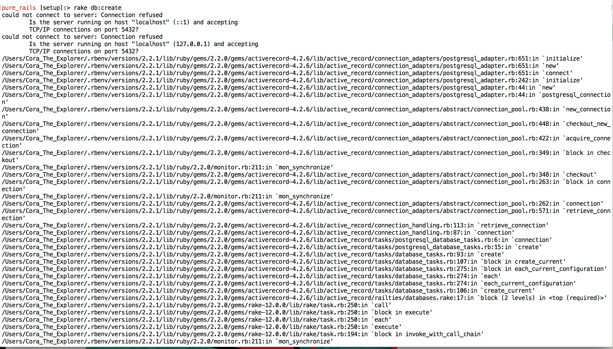

Cora Hays-Magan

Dear Future Self,
You got this message again?
Yes, you have see it before.
Here's steps to debug:
ps auxwww | grep postgres - no processes running
pg_ctl -D /usr/local/var/postgres status - Checks the status of the server
kill -9 *PID NUMBER*
Try brew
Update if other errors or solutions are found or else you will pay.
Best of luck,
Past Self